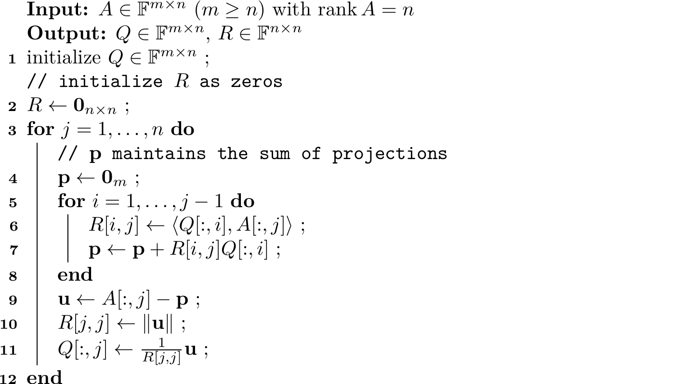

6.5. QR Decomposition#
We have studied how to conduct the Gram-Schmidt process to construct an orthonormal basis out of any given basis. In terms of matrices, there is a very important matrix decomposition called the QR decomposition that corresponds to the Gram-Schmidt process.
Suppose there is a matrix \(A \in \FF^{m \times n}\)(\(m \geq n\)) with full rank, in this case, rank \(n\). Its column vectors are interpreted as linearly independent vectors in \(\FF^m\). Note that if \(m = n\), then the column vectors form a basis. By conducting the Gram-Schmidt process, or in terms of matrices, we have
where \(Q\) is an \(m \times n\) matrix whose column vectors are orthonormal and \(R\) is an upper-triangular matrix with positive diagonal entries. By convention, we use letters Q and R to denote these two matrices, hence the name QR decomposition. We have special names for matrices like \(Q\) provided they are square matrices. We call a real**square matrix an orthogonal matrix if it consists of orthonormal columns. The name is changed to unitary matrix if the square matrix is complex.
It is clear that \(A\) consists of the original list of linearly independent vectors, and \(Q\) consists of the desired orthonormal vectors. But what is \(R\) made of? We shall soon answer this question. Briefly speaking, it consists of the inner products (see (6.17)) we compute during the Gram-Schmidt process.
In fact, we often have two ways to implement the QR decomposition in practice. One is called the classical Gram-Schmidt Process, and the other is called the modified Gram-Schmidt process.
6.5.1. Classical Gram-Schmidt Process#
The classical Gram-Schmidt process is described in Algorithm 6.1, which is nothing but an algorithmic representation of (6.17).
Algorithm 6.1 (Classical Gram-Schmidt QR Decomposition)

To associate with the notations we are familiar with, write
By comparing with (6.17), we note that line 2, 6 and 10 in Algorithm 6.1 define the entries of \(R = (r_{ij})\) in the following way:
This answers our previous question about what \(R\) looks like.
You might worry that Algorithm 6.1 may fail when executing line 11 if \(R[j,j] = 0\). But please be rest assured that this cannot happen since we have already shown in the proof of Theorem 6.5 that \(\mathbf{u} \neq 0\), i.e., \(R[j,j] \neq 0\). So, is our work done here? Is there anything we have yet to prove? Though Algorithm 6.1 will not generate any errors, it will always produce matrices \(Q\) and \(R\), and \(Q\) consists of orthonormal columns, we have not however justified that the product of \(Q\) and \(R\) is \(A\), i.e., \(A = QR\). We now prove this in the following.
In each iteration \(j\), line 11 in Algorithm 6.1 gives
Replacing \(\mathbf{u}\) using line 4 through line 9 yields
We then equate the right-hand sides of (6.18) and (6.19):
In terms of matrices, this is equivalent to
since \(r_{ij} = 0\) for \(i > j\). Because the above equation holds for every \(j\), by stacking \(A[:,j]\) together, we finally obtain \(A = QR\) as desired.
We summarize the QR decomposition into the following theorem.
Theorem 6.6 (QR Decomposition)
Let \(A \in \FF^{m \times n}\)(\(m \geq n\)) be a matrix with full rank, i.e., rank \(n\). Then \(A\) can be decomposed as a product of a matrix \(Q\) consisting of orthonormal columns and an upper triangular matrix \(R\) with positive entries along the diagonal. That is,
Now, let us work on an example using the QR decomposition.
Exercise 6.3
Apply the QR decomposition to the matrix
Solution
Suppose \(A = \begin{bmatrix} \mathbf{v}_1 & \mathbf{v}_2 & \mathbf{v}_3 \end{bmatrix}\)(Step 1) \(\mathbf{u}_1 = \mathbf{v}_1 = (0,1,0)^\top\). \(r_{1,1} = \norm{\mathbf{u}_1} = 1\). \(\mathbf{e}_1 = \mathbf{u}_1 / 1 = (0,1,0)^\top\).
(Step 2) \(r_{1,2}\) is computed by
Subtracting the projections, we have
Then, \(r_{2,2} = \norm{\mathbf{u}_2} = 4\), and \(\mathbf{e}_2 = \mathbf{u}_2 / 4 = (1,0,0)^\top\).
(Step 3) \(r_{1,3}\) and \(r_{2,3}\) are computed by
Subtracting the projections, we have
Then, \(r_{3,3} = \norm{\mathbf{u}_3} = 6\), and \(\mathbf{e}_3 = \mathbf{u}_3 / 6 = (0,0,1)^\top\).
In summary, matrices \(Q\) and \(R\) are given by